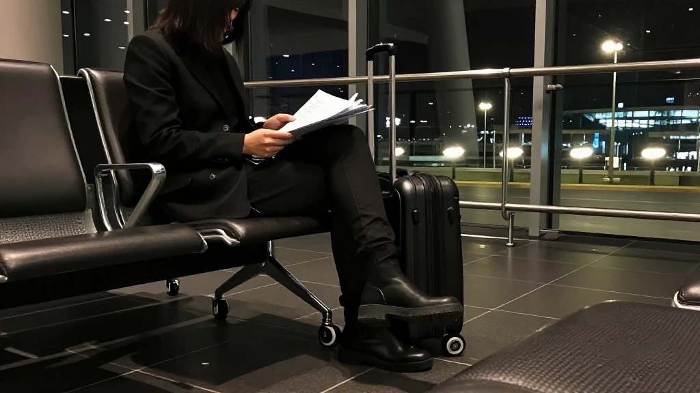
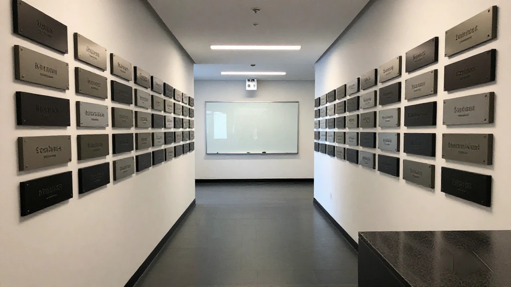
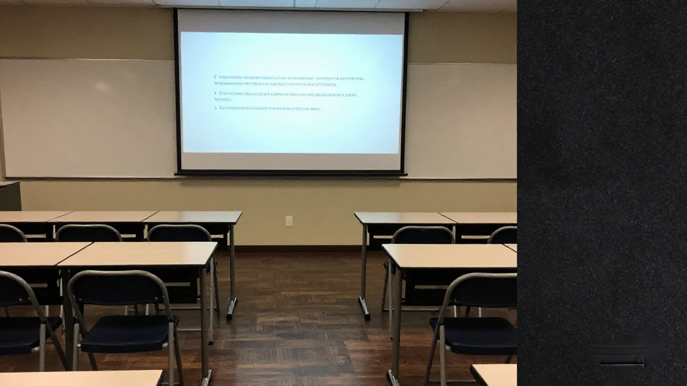
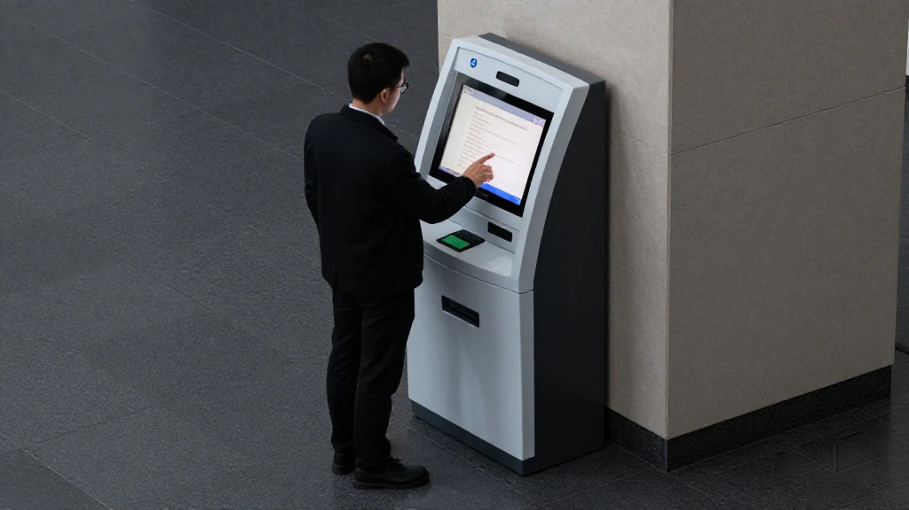

圖片由 AI輔助創作Image by AI
【鄭哥點評】欄目：鄭哥博客點評｜日期：2026-11-09
今日五條，全部同錢有關，但唔係同一個錢。廣州招商隊一年跑成一本行程表；天河一個區年內新增十二萬四千戶企業，仲把人工智能定做「頭號產業」；深圳一份中小企業條例十一月一日起施行，一份科創貸款貼息十一月十二日截止；廣東初創班一萬元補貼，十一月二十日收閘。兩個截止日加一份法規，比任何風口都實在。

圖片由 AI輔助創作Image by AI
一、廣州出「招」：招商隊一年跑成行程表
十一月八日《廣州日報》一篇側記，把廣州今年「招商引資年」嘅節奏寫到好白：四日上午九點企業家座談，十點國際投資年會開幕，中午同華潤簽全面戰略合作，下午兩點僑商專場，四點招商隊已經喺機場。
會上十五家名企拿到首批「城市合伙人」身份，由中國電建、馬士基、輝瑞中國到雲從科技、九識智能；僑商專場推介項目總投資三百七十三億元。前三季新引進項目超二千二百個，計劃投資三千四百九十三億元、增長百分之一百四十九，固定資產投資增長百分之二十點六。
來源：廣州日報《廣州出「招」：從請進門到敲開門》，2026年11月8日｜https://www.gz.gov.cn/zt/gzlfzgzld/gzld/content/post_11092077.html

圖片由 AI輔助創作Image by AI
二、天河：一年新增十二萬四千戶企業
天河區政府十一月六日一篇招商稿，數字密度好高：一至十月落地用地及樓宇項目三百零八個，前三季新備案項目計劃投資五百七十六億元、提前超額完成年度目標，新簽約項目預計一千零八十六億元。
市場主體更值得睇：全區新增企業十二萬四千戶、總量七十八萬三千戶，兩項都係全市第一。天河今年把人工智能定做「頭號產業」，目標六百二十億元；廣棠科創城二十一個項目扎根，中科酷原嘅量子平台亦落戶於此。
來源：廣州市天河區人民政府《廣迎世界「合伙人」：天河為什麼是「企業福地」？》，2026年11月6日｜http://www.thnet.gov.cn/gkmlpt/content/11/11091/post_11091223.html
圖片由 AI輔助創作Image by AI
三、深圳科創貸款貼息：十一月十二日截止
深圳市科技創新局十一月三日發通知，徵集研發投入較高嘅民營中小企業融資需求。政策底稿係人民銀行、科技部、財政部聯合方案：二〇二六年起新發放嘅科創貸款，符合條件可享中央財政貼息，金融機構協助申請擔保。
門檻三條，要同時滿足：深圳註冊嘅民營中小微企業；上年度研發投入強度達一成、研發費用不低於一百萬元；屬新興產業或未來產業重點領域。填報喺國家科技管理信息系統，十一月十二日截止。
來源：深圳市科技創新局《關於組織開展2026年科技創新貸款支持研發投入水平較高民營中小企業融資需求信息徵集工作的通知》，2026年11月3日｜https://stic.sz.gov.cn/xxgk/tzgg/content/post_13050814.html

圖片由 AI輔助創作Image by AI
四、廣東初創班：一萬元補貼，十一月二十日截止
省人社廳指導嘅二〇二六年度初創企業經營者培訓開閘，今年首次由創投機構承辦專題——深天使做「創業融資實訓」，全省擇優八十名，結業可申領一萬元省級補貼；整體六大專題、一千個名額。
課程講股權融資、知識產權資本化、商業計劃書同談判風險，走訪雲天勵飛、嘉立創、騰訊等鏈主。條件係省內註冊五年內嘅小微企業，製造業同港澳青年項目優先；十二月開課、深圳上堂，十一月二十日報名截止。
來源：廣州日報新花城《萬元政府補貼｜2026年度廣東省人社廳初創班創業融資實訓專題報名啟動》，2026年11月5日｜https://huacheng.gz-cmc.com/pages/2026/11/05/a9721ffefebc4d3fafca6009b52f0194.html

圖片由 AI輔助創作Image by AI
五、深圳中小企業條例：一人公司寫進法規
《深圳經濟特區中小企業發展促進條例》九月一日修訂通過，十一月一日起施行，共八章五十八條。修訂理由寫得幾坦白：融資難融資貴、產業空間成本高企、市場拓展乏力、不當執法干擾經營。
兩條最值得留意：支持發展「人工智能一人公司社區」，為依托 AI 嘅微型主體提供住所託管、算力數據同投融資對接；用模型券、語料券支持中小企業買算力、模型、語料。科研人員離崗創業可保留人事關係，政府採購預付款鼓勵提高到三成以上。
來源：深圳市人民政府《〈深圳經濟特區中小企業發展促進條例〉解讀》，2026年10月19日｜https://www.sz.gov.cn/zfgb/zcjd/content/post_13033234.html
圖片由 AI輔助創作Image by AI
六、鄭哥點評
第一，招商唔係發佈會，係行程表。廣州篇最好睇嘅唔係三千四百九十三億，係時間：九點座談、十點年會、十二點簽約、四點去機場。簽約係結果，行程才係方法。
第二，補貼門檻由「有地」變成「有數」。研發強度一成、研發費用一百萬，兩條同時過先算。呢個門檻係篩子，篩走補貼型公司；亦係鏡，照出邊間真係把錢燒喺研發。
第三，最小嘅創業單位被寫進法規。一人公司社區、模型券、離崗保編——深圳等於承認：一個人加一堆模型，都算一間公司。
一句到尾：今日真正要動手嘅只有兩個日期——十一月十二日前填貼息，十一月二十日前報初創班。政策唔會等，日曆都唔會。
圖片由 AI輔助創作Image by AI
\[Zheng Ge's Take\] Column: Zheng Ge's blog commentary | Date: 2026-11-09
All five items today are about money, but not the same money. Guangzhou's investment teams spent the year running an itinerary rather than holding press conferences. One district, Tianhe, added 124,000 companies and made AI its number-one industry. In Shenzhen, an SME ordinance took effect on 1 November and a subsidised technology-loan scheme closes on 12 November. Guangdong's starter programme offers 10,000 yuan and shuts on 20 November. Two dates and one statute beat any talk of a boom.
圖片由 AI輔助創作Image by AI
1. Guangzhou's pitch: a year of promotion that became an itinerary
A feature in Guangzhou Daily on 8 November lays out the rhythm of the city's investment year plainly: a meeting with entrepreneurs at nine on 4 November, the international investment conference at ten, a strategic agreement with China Resources at noon, a session for overseas Chinese businesspeople at two, and the delegation at the airport by four.
Fifteen companies received the first city-partner titles, from PowerChina, Maersk and Pfizer China to CloudWalk and Jiushi Intelligent, while the overseas-Chinese session presented projects worth 37.3 billion yuan. In the first three quarters the city registered more than 2,200 new projects with planned investment of 349.3 billion yuan, up 149 percent, and fixed-asset investment rose 20.6 percent.
Source: 廣州日報《廣州出「招」：從請進門到敲開門》，2026年11月8日 | https://www.gz.gov.cn/zt/gzlfzgzld/gzld/content/post_11092077.html
圖片由 AI輔助創作Image by AI
2. Tianhe: 124,000 new companies in a year
A Tianhe district investment article dated 6 November is dense with numbers: 308 landed land and office projects from January to October, newly filed projects worth 57.6 billion yuan in the first three quarters, beating the annual target early, and newly signed projects expected at 108.6 billion yuan.
The business population matters more: 124,000 new companies this year for a total of 783,000, both first in the city. Tianhe has made artificial intelligence its number-one industry with a 62 billion yuan target; Guangtang Science City hosts 21 settled projects, and Zhongke Kuyuan's quantum platform has moved in too.
Source: 廣州市天河區人民政府《廣迎世界「合伙人」：天河為什麼是「企業福地」？》，2026年11月6日 | http://www.thnet.gov.cn/gkmlpt/content/11/11091/post_11091223.html
圖片由 AI輔助創作Image by AI
3. Shenzhen's technology-loan subsidy closes on 12 November
Shenzhen's science and technology bureau issued a notice on 3 November collecting financing demands from private SMEs with high research spending. The basis is a joint plan by the central bank, the science ministry and the finance ministry: qualifying technology loans issued from 2026 can receive central interest subsidies, with institutions helping arrange guarantees.
Three conditions must all hold: registered in Shenzhen, private, small or medium; last year's research intensity at ten percent or more with research spending of at least one million yuan; and a place in a key emerging or future industry. Filing runs through the national science and technology information system and closes on 12 November.
Source: 深圳市科技創新局《關於組織開展2026年科技創新貸款支持研發投入水平較高民營中小企業融資需求信息徵集工作的通知》，2026年11月3日 | https://stic.sz.gov.cn/xxgk/tzgg/content/post_13050814.html
圖片由 AI輔助創作Image by AI
4. Guangdong's starter programme: 10,000 yuan, closing 20 November
Guangdong's 2026 programme for startup operators is open, and for the first time a venture institution hosts one track: Shenzhen's angel fund runs a financing bootcamp for 80 selected founders statewide, with a 10,000 yuan provincial subsidy on completion. The programme overall has six tracks and 1,000 places.
The course covers equity financing, capitalising intellectual property, business plans and negotiation risk, with visits to supply-chain leaders such as Intellifusion, JLC and Tencent. Eligibility: small companies registered in Guangdong within five years, with priority for manufacturing and Hong Kong-Macao youth projects. Classes start in December in Shenzhen; registration closes on 20 November.
Source: 廣州日報新花城《萬元政府補貼｜2026年度廣東省人社廳初創班創業融資實訓專題報名啟動》，2026年11月5日 | https://huacheng.gz-cmc.com/pages/2026/11/05/a9721ffefebc4d3fafca6009b52f0194.html
圖片由 AI輔助創作Image by AI
5. Shenzhen's SME ordinance: the one-person company enters statute
Shenzhen's ordinance on promoting small and medium enterprises was passed in revision on 1 September and took effect on 1 November, with eight chapters and 58 articles. The stated reasons are candid: costly and difficult financing, expensive industrial space, weak market access and improper enforcement disturbing business.
Two provisions stand out: support for communities of artificial-intelligence one-person companies, giving AI-run micro businesses address hosting, computing and data support and investment matchmaking; and model and corpus vouchers so SMEs can buy computing, models and training data. Researchers who leave to start firms keep their personnel status, and public procurement is encouraged to raise advance payments above thirty percent.
Source: 深圳市人民政府《〈深圳經濟特區中小企業發展促進條例〉解讀》，2026年10月19日 | https://www.sz.gov.cn/zfgb/zcjd/content/post_13033234.html
圖片由 AI輔助創作Image by AI
6. Zheng Ge's Take
First, promotion is not a press conference, it is an itinerary. The best part of the Guangzhou story is not the 349.3 billion but the clock: a meeting at nine, the conference at ten, a signing at noon, the airport at four. Signings are the result; the itinerary is the method.
Second, the subsidy threshold has moved from land to numbers. Ten percent research intensity and one million yuan of research spending, both required. That threshold is a sieve that filters out subsidy-shaped companies, and a mirror showing who really burns money on research.
Third, the smallest company has entered statute. AI one-person communities, model vouchers, job protection for departing researchers — Shenzhen is admitting that one person plus a stack of models is a company.
Bottom line: only two dates demand action — file the loan demand by 12 November, register for the starter programme by 20 November. Policy will not wait, and neither will the calendar.